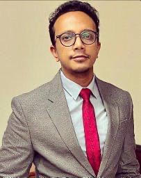

01 / STRUCTURES
Steel seismic systems
Nonlinear behavior of steel moment frames, deep wide-flange and hollow structural section columns, collapse fragility, and design comparisons.
Structural & Earthquake Engineering
PhD Candidate · National Taiwan University
I study how structures perform during earthquakes and how buildings and communities recover afterward-connecting nonlinear structural analysis, probabilistic seismic risk, and resource-constrained recovery modeling.

Background
I am a PhD candidate in the Department of Civil Engineering at National Taiwan University, working under the supervision of Professor Tung-Yu Wu.
My doctoral research brings together seismic behavior of steel structures, collapse and loss assessment, life-cycle performance, and the modeling of post-earthquake functional recovery. I am particularly interested in connecting building-level engineering models with decision-making and resource constraints that influence recovery across a wider community.
Research focus
Engineering analysis across structural, building, and recovery-system scales.
Nonlinear behavior of steel moment frames, deep wide-flange and hollow structural section columns, collapse fragility, and design comparisons.
Probabilistic seismic risk, FEMA P-58 loss assessment, life-cycle cost, and environmental impact evaluation.
Stochastic recovery delays, Taiwan-informed post-earthquake impeding factors, and shared engineering, permitting, and contractor constraints.
Selected work
Comparative studies of deep wide-flange and HSS columns in steel moment frames, examining collapse risk, life-cycle economics, and environmental performance across structural configurations.
Extension of ATC-138-style recovery modeling with Taiwan-informed administrative and technical impeding-factor assumptions, applied to a representative multistory residential building.
Exploration of how access to shared engineering and contractor services, scheduling rules, and competing repair demands can change simulated recovery outcomes in regional case studies.
Research output
A verified entry from my publication record; additional publications and DOI links can be added here.
Accepted · October 2026
Influence of steel column compactness on seismic risk, life cycle performance, and sustainability of perimeter moment frames
https://doi.org/10.1061/JSENDH.STENG-16751
Get in touch
I welcome conversations about structural earthquake engineering, seismic risk assessment, and resilient recovery, including potential postdoctoral research collaborations.
Visit NTU Civil Engineering